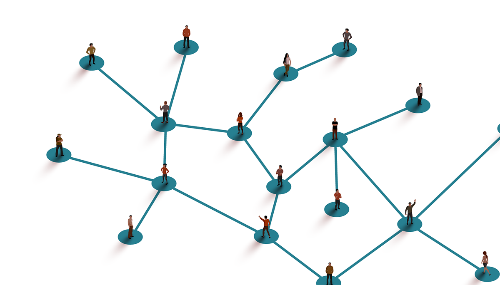

When Everything Feels Like a Scam, Real Scams Become Harder to Avoid
In 2022, “Alex” (not his real name) got a call from a phone number he didn’t recognize. The woman on the other end apologized for dialing the wrong number, but she didn’t hang up. She began talking with Alex about this and that. By the time she finally hung up, they had plans to talk again.
Months passed, and, over time, they grew closer. One day, the conversation turned to money. The woman mentioned cryptocurrency. She asked Alex if he’d heard of it, if he had any money invested in it. She mentioned she’d been doing well with it, and she let him know what platforms she used, in case he wanted to try it out.
Alex decided to try one of them. He put in a small amount, and watched it grow. Soon, he was adding money with every paycheck.
It was several more months before Alex understood what had happened to him: That everything from that first ‘wrong number’ had been part of an elaborate scam that has become known as “pig butchering”, a name that reflects how scammers invest weeks or months cultivating a relationship with their victim — fattening them up, so to speak — - before going in for the kill.
Alex is far from alone.
According to FTC data, investment-related frauds are up almost 700% since 2017, more than any other category of scam or fraud. The only other category that comes close is business and job opportunity scams, which are up almost 600%. Together, these 2 categories paint a depressing picture, of a group of people who know that people are hurting financially, and want to find a way to take advantage. These scams work because they are designed to exploit something real: the increasing belief that the conventional path of working hard and saving money is not cutting it anymore.
The woman who called Alex didn’t lead with a get-rich-quick pitch. She led with a friendship, and eventually a suggestion that she’d found a smarter way to get ahead. She knew that more and more people had internalized what the numbers have been saying for years: that wages weren’t keeping up, that for many, homeownership was slipping out of reach, and that the people who were getting ahead weren’t doing it by working harder. They were doing it by knowing something, or someone, that you didn’t.
Hover over any line to see its growth since 2017
That belief is rooted in some economic truths. From 1948 to 1980, productivity and worker pay tracked fairly closely together...
But starting around 1980, the two metrics diverged sharply. A hard day's work meant success for your boss more than it did for you.
Hover over the chart on the right to explore the growing gap between productivity and pay over time.
For a while, the gap was filled by debt. Credit card use increased, as did home equity loans, and now we have so many buy-now-pay-later schemes that you can buy a burrito today and pay it off in installments. Debt let people maintain a standard of living their wages alone couldn't support.
It's not surprising that people would be looking for another way to make ends meet, whether that's a side hustle, a scheme, or maybe something in between.
Source: Economic Policy Institute, "The Productivity-Pay gap"
NOTES:Data are for compensation (wages and benefits) of production/nonsupervisory workers in the private sector and net productivity of the total economy. Net productivity is the growth of output of goods and services less depreciation per hour worked. https://www.epi.org/productivity-pay-gap
Source: AARP Study of Multilevel Marketing, AARP Foundation, 2018
Multilevel Marketing is somewhere along that spectrum. It's marketed as a side hustle, but structured like a pyramid scheme. Most of the people involved believe, at first, that they're getting an opportunity to get ahead, but statistics tell a different story.
Alex’s scammer was a stranger he never met. For people pulled into multi-level marketing, the recruiter is usually someone they already trust, most often a friend, family member, neighbor, or member of their house of worship. And unlike the crypto scam that Alex fell victim to, multilevel marketing schemes are usually completely legal. These schemes deliberately go after people making less than the median income, and we can see that in the distribution of incomes of people who report becoming involved in MLMs. The majority have household incomes under $50,000.
Though they are lured in by promises of potential high incomes, vacations and even cadillacs for the highest earners, the vast majority of people involved in MLMs earn little to no profit. 74% either lost money or broke even, with only 26% seeing any profit at all. It's worth noting that everyone involved spent time on their businesses, so though some did earn some money, it often amounted to less than minimum wage.
Of those who did turn a profit, more than half made under $5,000 — a figure that looks even smaller when you account for the hours put in, the products purchased, and the relationships strained in the process of selling to friends and family. The people at the top of the pyramid do exist. But for every one of them, there are dozens who absorbed a loss and moved on.
Source: AARP Study of Multilevel Marketing, AARP Foundation, 2018
We will all remain vulnerable to scams until we can get out of the scam-or-be-scammed mindset. As long as we're trying to gain the upper hand on someone else, as long as we're desperately looking for the angle that's going to get us an advantage and make us financially secure, we will be vulnerable to those looking to take advantage of our desperation. Alex's scammer was successful because she offered him a friendship and a path to security. What if he'd already had a network of friends, family, neighbors and coworkers offering him the same thing?
When you're already part of a network where people look out for each other, you have somewhere to turn before making a desperate decision. You also might have less reason to be desperate in the first place.
Look into mutual aid programs in your community. These are networks built on the idea that people can meet each other's needs directly, instead of relying on institutions. Find out how you can help your neighbors when times are tough for them, and find a community that will step in when times are tough for you. You just might find the kind of solidarity that helps you build real economic power alongside your neighbors and coworkers, and a community that makes you harder to isolate and easier to protect.
